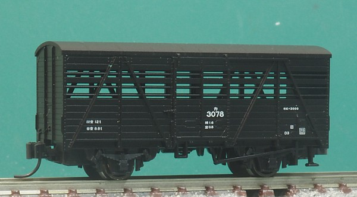
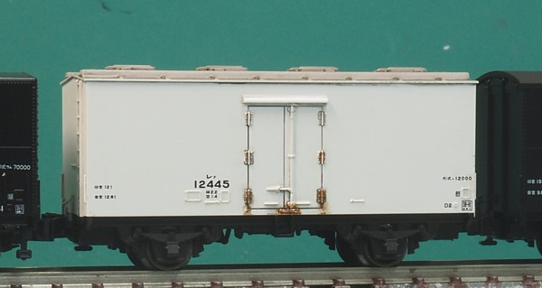
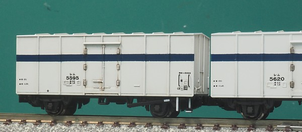
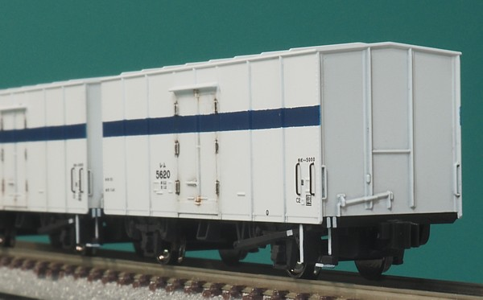
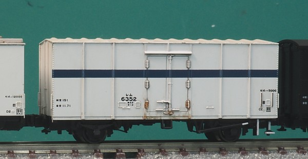
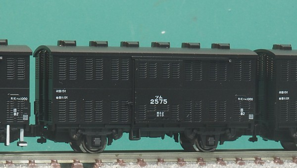
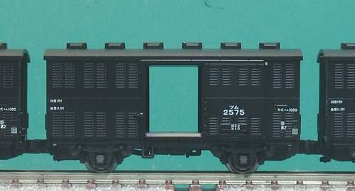
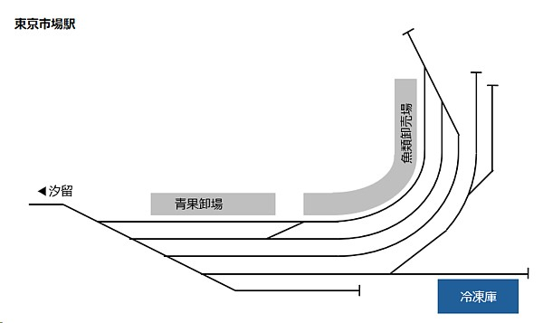
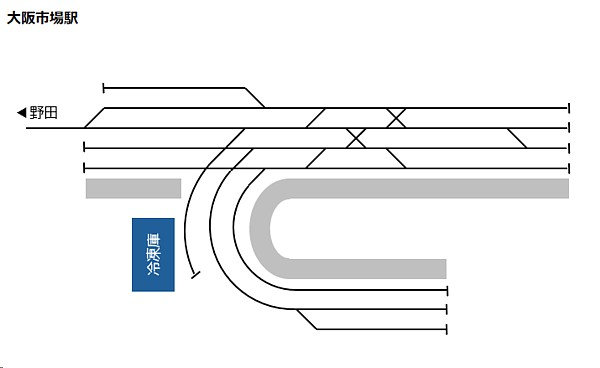
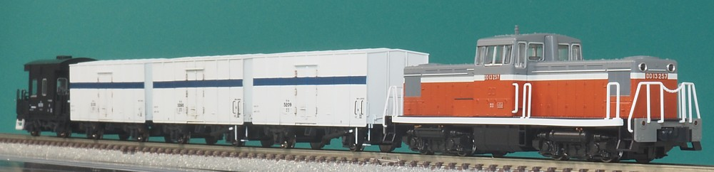

鉄道が輸送の主役だった時代、食料品も鉄道で輸送されていました。 大都市では卸売市場が鉄道輸送の便利な立地につくられ、市場駅まで支線が引かれていました。 東京だと汐留貨物駅の裏に築地市場、 大阪だと梅田貨物駅から大阪中央市場、百済貨物駅から百済市場まで貨物線が入り、 DD13などに牽かれ冷蔵車、通風車が生鮮食料品を輸送していました。
生きた家畜を運ぶ家畜車です。
主に牛を運ぶのに使われ、特徴的な形態(すけすけ)から貨車の模型としても人気があり、 香港製の時代から結構多くの人が持っていたように思います。 とはいえその使われ方は「牛さんお引越し」のような生易しいものではなく、 冷蔵/冷凍技術が未熟だった時代に食肉用の牛の鮮度を保つために 生きたまま屠殺場まで移動してもらうというなんとまぁ…なものでした。 この用途ですから、牛の輸送があれば豚も対応する貨車があり、豚積車(記号はウ)でした。

模型はトミックスのリニューアル品。
屋根をワムたちと同じくキャンパス表現にしました。 藁が詰まるので吊戸になってる扉もちゃんと表現されてるため 滑車まわりのマスキングが面倒でした…。
屋根に氷を詰める氷槽を配置した、天井氷槽式の冷蔵車です。
保冷性能のよい「重保冷」の冷蔵車で、レ12000として新製された車両と、 1段リンクとして製造されたレ10000を2段リンク化したものを合わせて1841両が製造されています。 ちなみに日本では魚は「抱き氷」として氷の中に魚を詰めて輸送する方式が主流だったそうで (魚屋さんにそのまま並んでたやつですね…)、 天井氷槽の利用はそこまででもなかったようです。

こちらもトミックスの製品。リニューアル品の系列ですが、この車両は香港製時代にはなかったと思います。 車体と一体成型されてしまっている端梁は黒く塗装。 だいたいサビている扉のヒンジは錆色を入れました。
レ12000のような重保冷の冷蔵車は構造が独特のため汎用の貨物を積んで使用することができず、 どうしても輸送は漁港 → 消費地の一方だけ、戻りは返空となってしまい輸送効率が落ちます。 また輸送量が季節ごと、獲れ高により大きく変動し、操車場の端で出番を待つ期間が長くなりこれも不効率。 というわけで有蓋車としても使用できるように扉を引き戸とし、 保冷性能をやや落としした「軽保冷」の有蓋車としてレム１やレム400が開発されましたが その保冷性能の悪さから敬遠され失敗。
改めて重保冷の冷蔵車として開発されたのがレム5000です。 製造は1964～1969年、製造量数は1,461輌でした。 車体は大型となり積載量は15t。最後の2軸貨車なんて言われてますね。
レム1・レム400の失敗のため、 レ=重保冷、レム=軽保冷(性能が悪い)というイメージが定着してしまい,"レム"は荷主から敬遠されていたため それを払しょくするために真っ白な車体ではなく青15号の帯を巻いて保冷性能をアピールしたんだそうです。

こちらは前期形です。KATOから花輪線貨物列車セットとともに発売されました。 花輪線にレムがいたのかどうかはよくわからんのですが…w。
車体の白色がKATO風の"くすんだ"白 = アイボリーで表現されており、
単独で使う分にはこれでよいのですがトミックスのレム5000とか、レサ10000とかとつなげるとあまりに色が違います。
ウェザリングするにしてもリブの周りとかを汚したかったので全体がくすんでいるのはちょっとイメージが違い、
塗装を全剥離したうえで再塗装しました。
白はガイアノーツのアルティメットホワイト、青15号はいつもの自家調色です。

ついでに手すりは植え込み化しています。 φ0.2の燐青銅線を別で塗装してから取り付け。孔のほうはφ0.25といういつものやつです。
インレタはレボリューションファクトリーのもの。
貨車のインレタは冷遇されがちですが、専用のものを出してくれてるのはありがたいです。
超余談ですが、帯の位置やインレタの位置を出すのにリベットの数を数えながらやりました。
英語の模型界隈ではどうでもいい細かいことにこだわるやつを "rivet counter" というみたいなのですが、
自分、生まれて初めてリベットの数を数えました…。
側ブレーキ表記が片側にだけ側ブレーキがついていることを主張します。 これもRLFのインレタなのですが、おそらく実際にはもうちょっと内側、 解放テコとかぶるくらいの位置についてそうです。解放テコを別パーツ化すればすっきり 仕上がりそうですが、さすがにそこまでの気力はなく。
レム5000の2次型で、車内にはドライアイスを置く棚が設置され、 屋根の構造が変更されてプレス製のリブがつき、製造時から側ブレーキが両側に取り付けられています。 番号も6000～として区別されました。
末期には、保冷性能を活かして黒崎駅からドライアイスそのものを輸送するのにも使われていました。

模型はトミックス製。 同時期発売のワラ1と同じく、一体成型で壁のようになってしまっている側ブレーキの軸を削り取りφ0.3真鍮線を取り付け。 下回りを塗装したうえで車体は軽くウェザリングしています。
野菜、青果、花などの呼吸をする貨物を運ぶための「通風車」です。 屋根にはベンチレーター、側面はスリット構造、床面もスリット構造になってます。 通風車はベンチレーター・スリットを閉じて有蓋車として使用できるものも多かったのですが、 ツム1000の場合は通風車専用でした。

KATO、TOMIXの両方から発売されていますがこちらはKATO製。 C56小海線と一緒に、これまた通風コンテナを積んだコキ5500と一緒に商品化されました。 このツム1000は扉が開いて扉開放状態で運用されていた小海線のレタス列車が再現可能、 コキ5500の通風コンテナは底面のスリットまで再現されているという気合の入れようでした。

というわけで扉が開きます。 扉も薄く、シャープに成型されており閉じている状態だとこれが開くなんて想像つきません。
で中身はキャベツの木箱…なのですがこちらはまぁ積荷ですので…な感じ。 なんていうか、C62北海道型の増炭囲い板みたいな。 荷崩れ防止用の木枠とともに作り直そうと画策中で、とりあえず取っ払った状態です。 床板は木をイメージして茶色で塗装してみたのですが、鉄製のスリットがまんま見えてた説もありミスったかも。

東京卸売市場、いわゆる築地市場の配線図です。
ネットの資料を拾い集めて作ってみました。
冷凍庫のあたりの引き込み線の位置関係がいまいちわからないのですが、
おそらくこんな感じかと。
鉄道貨物で集まってくる青果・海産物を扱いやすいよう、汐留の裏を選んで作られました。 東海道本線の貨物支線が汐留から伸びており、食料品を積んだ貨車が入ってきました。 レサ10000系で運転された「とびうお」も築地の競りに合わせて早朝に到着するように時刻設定され、 列車からおろされた海産物はその場で競りにかけられていたそうです。
信号設備としては、汐留の構内の扱いになっていて 入換信号機が設置されています。

こちらは大阪市場駅。
大阪市中央卸売市場につながっています、というか、半円形の線路の中に市場がある構造です。
大阪環状線の野田駅から貨物支線が伸びており、梅田貨物駅からやってきた貨物列車が入ります。 汐留の構内だった築地とは異なり信号設備的にも支線になっており場内信号機・出発信号機が設置されています。 出発信号機は2つ設置されていました。 単純な配線の築地とは異なり、矢羽根型の操車場で見られるような配線になってますね。
貨物列車には車掌車も連結されていました。 レム5000のほか、レサ10000の「ぎんりん」もここに入ってきていました。

ちょうど再生産されたDD13と組み合わせて、市場に向かう貨物列車を組みました。
急曲線、市街地の軒下をかすめるような線路も貨物支線ならありで、
市場駅のジオラマを作るのも面白そうかなとおもったり。
入れ換えも楽しめそうです。
実物は突放だったようですが。